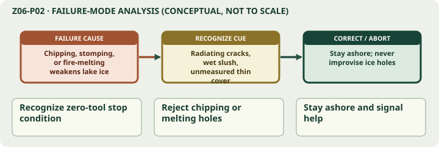

Z06-P02 · Hunting and fishing · Adapted historical material
Zero-Tool Ice-Hole Prohibition and Shore Fallback
Reject improvised ice-hole chipping, burning, or stomping when proper augers and ice-safety gear are absent.
When it applies · Frozen-lake environments without verified ice thickness, flotation, and proper cutting tools.
Equipment · Shoreline shelter and signaling gear; lawful ice auger and rescue picks only on verified recreational trips.

Actions
- Stay completely off frozen water when lacking ice-assessment tools, personal flotation, rescue picks, and a verified route.[H18, X03]
- Never stomp, strike with rocks, chop haphazardly, or build fires to melt a fishing hole through natural ice because localized fractures trigger sudden breakthrough.[H18, X03]
- Limit angling strictly to lawful open-water shore sites when physically safe, recognizing that conserving calories and warmth beats speculative winter fishing.[H01, H18]
Failure recognition · Attempting to smash or burn a hole in lake ice compromises surrounding ice strength and creates an unguarded immersion trap.[H18, X03]
Verify · No improvised ice-hole cutting occurs and all group members stay on stable land when proper ice gear is absent.[H18, X03]
Stop or change course · Stop immediately at the shoreline if proper ice tools, flotation, verified rules, or safe ice conditions are absent.[H01, H18, X03]
Evidence and editorial notes
- H01 · Minnesota DNR · Minnesota Fishing Regulations (Current web edition)
- Section: Licensing, seasons, limits, and waterbody-specific rules · Conditions: Minnesota angling across inland, border, and designated waters
Support: Anglers must hold a valid license unless explicitly exempt and verify current season dates, possession limits, size slots, and special waterbody rules before fishing.
Limitations: Regulations change annually and differ on border waters, trout streams, and tribal/ceded territories; no emergency creates an automatic legal exemption. · Conflicting evidence: None noted.
Editorial note: Establishes Z06 fishing authority gate. · Specialist reviewer: Minnesota DNR fisheries and legal reviewer
Primary source · checked 2026-11-25 - H18 · Minnesota DNR · Waterfowl Hunting and Federal Migratory Bird Rules (Current web edition)
- Section: Waterfowl cold-water capsizing and non-toxic shot compliance · Conditions: Wetland and open-water fall waterfowl environments
Support: Cold-water immersion, overloaded boats, and wading drop-offs cause severe fatalities; wear flotation, check forecasts, and verify federal non-toxic shot and species limits.
Limitations: Emergencies and weather shifts override harvest goals; stay ashore in high wind or unverified ice. · Conflicting evidence: None noted.
Editorial note: Reconciles B013 P15-P16 with Z06 water/ice limits. · Specialist reviewer: Water-safety and wildlife reviewer
Primary source · checked 2026-11-25 - X03 · NWS · Cold Water Hazards and Safety (current web edition)
- Section: Cold Water Hazards > 1-10-1 Principle and Survival Actions · Conditions: Unexpected immersion in cold lakes, rivers, coastal or marine waters
Support: Protect the airway, use flotation, get out safely if possible, and prioritize rescue. The 1-10-1 mnemonic is descriptive and does not establish deadlines or survival times.
Limitations: Exact individual survival minutes vary widely with body size, clothing, sea state and water temperature. · Conflicting evidence: None; aligns with MN-COLDW and USCG guidance.
Editorial note: Anchors cold-water immersion decision thresholds in Z12. · Specialist reviewer: Cold-water rescue and emergency medicine
Primary source · checked 2026-11-24
Source lineage · Adapted historical material (B013-P16 zero-equipment ice limits) · Classification · Adapted historical material.